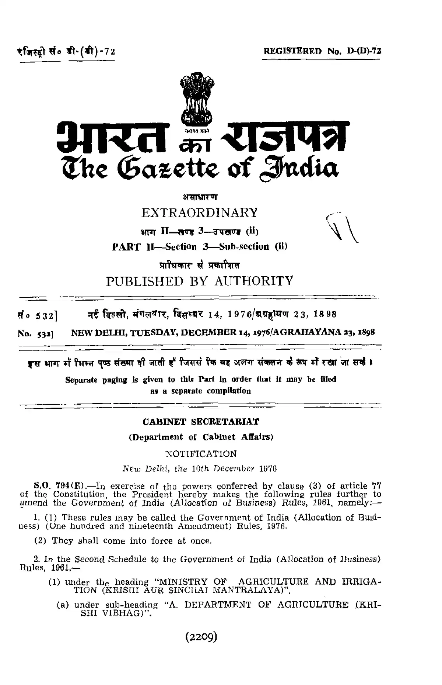
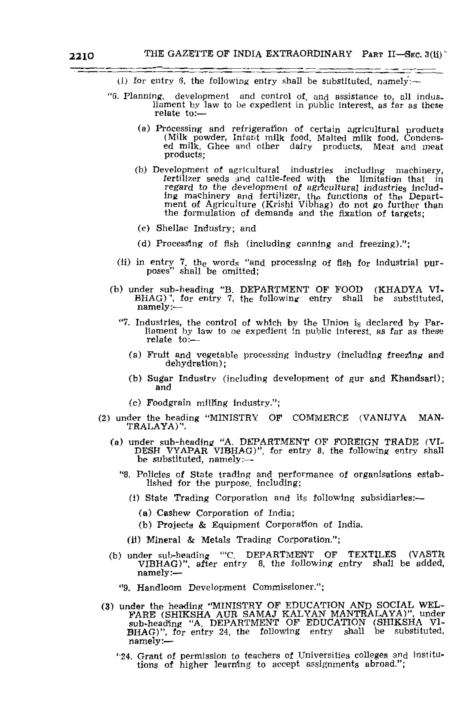
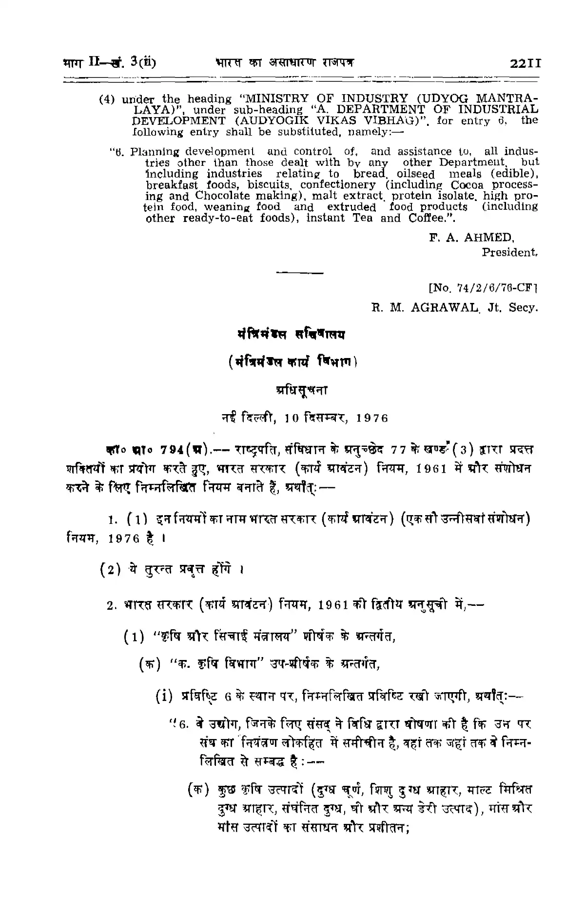
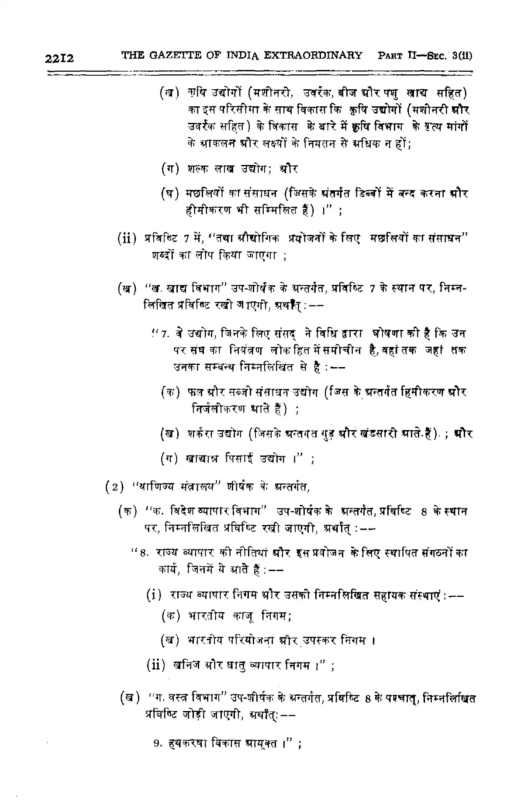
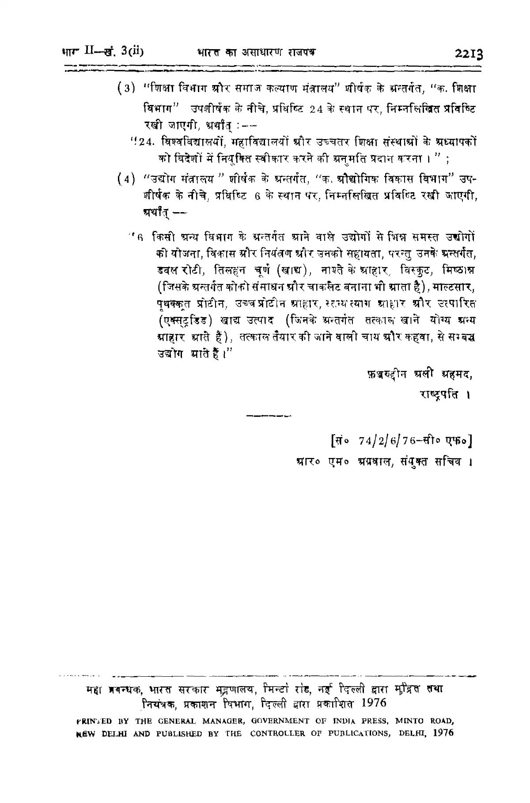

Amendment #119 (S.O. 794(E), 1976)
7 changes: 0 to the First Schedule, 7 to the Second Schedule. 7 applied
The order, page by page
Page 1 of 6

Page 2 of 6

123456Schedule 2 › MINISTRY OF AGRICULTURE AND IRRIGATION › DEPARTMENT OF AGRICULTURE › entry 6
- 6. Planning, development and control of, and assistance to, all indusllament by law to be expedient in public interest, as far as these relate to:-
- a. Processing and refrigeration of certain agricultural products (Milk powder, Infant milk food, Malted milk food, Condensed milk. Ghee and other dairy products, Meat and meat products
- b. Development of agricultural industries including machinery fertilizer seeds and cattle-feed with the limitation that in regard to the development of agricultural industries including machinery and fertilizer, the functions of the Department of Agriculture (Krishi Vibhag) do not go further than the…
- c. Shellac Industry; and
- d. Processing of fish (including canning and freezing).
applied at schedule 2 › ministry MINISTRY OF AGRICULTURE AND IRRIGATION › department A › part I › entry 6 in the Rules after #119
Schedule 2 › MINISTRY OF AGRICULTURE AND IRRIGATION › DEPARTMENT OF AGRICULTURE › entry 7
applied at schedule 2 › ministry MINISTRY OF AGRICULTURE AND IRRIGATION › department A › part I › entry 7 in the Rules after #119
Schedule 2 › MINISTRY OF AGRICULTURE AND IRRIGATION › DEPARTMENT OF FOOD › entry 7
- 7. Industries, the control of which by the Union is declared by Parllament by law to be expedient in public interest, as far as these relate to
- a. Fruit and vegetable processing industry (including freezing and dehydration)
- b. Sugar Industry (including development of gur and Khandsari) and
- c. Foodgrain milling industry.
applied at schedule 2 › ministry MINISTRY OF AGRICULTURE AND IRRIGATION › department B › group_heading I › entry 7 in the Rules after #119
Schedule 2 › MINISTRY OF COMMERCE › DEPARTMENT OF FOREIGN TRADE › entry 8
- 8. Policies of State trading and performance of organisations established for the purpose, including (1) State Trading Corporation and its following subsidiaries:--
- a. Cashew Corporation of India
- b. Projects & Equipment Corporation of India.
- i. Mineral & Metals Trading Corporation.
applied at schedule 2 › ministry MINISTRY OF COMMERCE › department A › group_heading III › entry 8 in the Rules after #119
after Schedule 2 › MINISTRY OF COMMERCE › DEPARTMENT OF TEXTILES › entry 8
- 9. Handloom Development Commissioner.
applied at schedule 2 › ministry MINISTRY OF COMMERCE › department C › entry 9 in the Rules after #119
Schedule 2 › MINISTRY OF EDUCATION AND SOCIAL WELFARE › DEPARTMENT OF EDUCATION › entry 24
- 24. Grant of permission to teachers of Universities colleges and institutions of higher learning to accept assignments abroad.
applied at schedule 2 › ministry MINISTRY OF EDUCATION AND SOCIAL WELFARE › department A › entry 24 in the Rules after #119
Page 3 of 6

7Schedule 2 › MINISTRY OF INDUSTRY › DEPARTMENT OF INDUSTRIAL DEVELOPMENT › entry 6
- 6. Planning development and control of, and assistance to, all industries other than those dealt with by any other Department, but including industries relating to bread oilseed meals ( edible ) breakfast foods, biscuits, confectionery (including Cocoa processing and Chocolate making), malt extract,…
applied at schedule 2 › ministry MINISTRY OF INDUSTRY › department A › group_heading L › entry 6 in the Rules after #119
Page 4 of 6

Page 5 of 6

Page 6 of 6
How this document was read
From the Government of India (Allocation of Business) Rules, 1961 and their amendments, as published by the Cabinet Secretariat (cabsec.gov.in), read by orgpedia. The readings of the older scanned gazettes have known gaps.